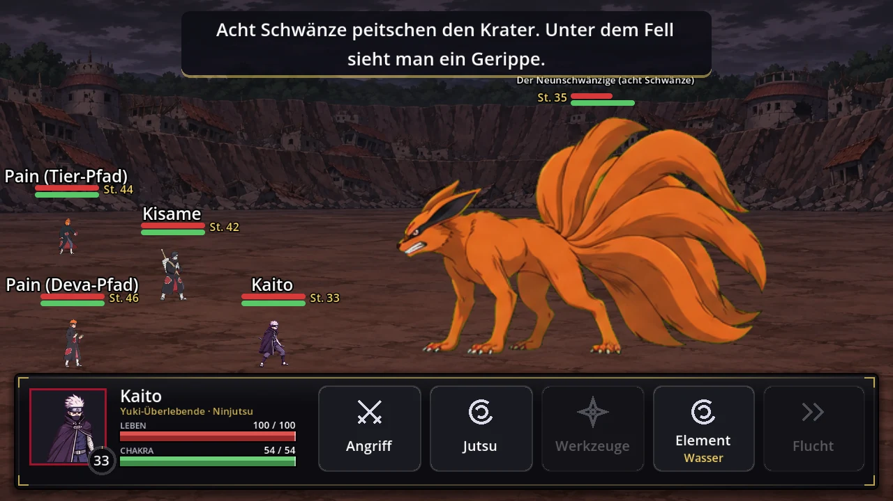
Bosse mit Phasen
Bosse verwandeln sich mitten im Kampf, und du siehst es: Chakramantel, Bijū-Gestalt, neue Helfer, ein anderer Himmel.
Android · Story-RPG
Trag den Mantel der Akatsuki. Erkunde die Shinobi-Welt, begleite ihre Mitglieder und kämpfe an ihrer Seite.
Android-TestfassungVersionshinweise
Ein Story-Rollenspiel fürs Handy, erzählt aus Sicht der Akatsuki. Du erwachst verletzt in einer Höhle, Itachi spricht dich an, und ein elfter Ring wartet auf dich. Von Gaaras Entführung bis zum letzten Ring.
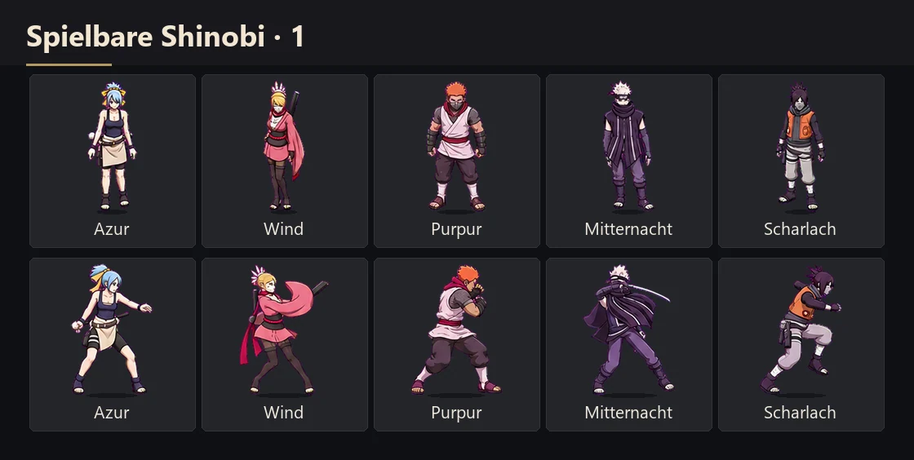
Wähle Aussehen, Heimatdorf, Clan, Chakra-Natur und Kampfstil. Dein Dorf entscheidet, wie dich die Leute unterwegs ansprechen, dein Clan, welche Techniken du lernst.
Fünf große Nationen und die kleinen Länder dazwischen, von der Wüste im Westen bis zu den Nebelinseln im Osten. Tippe auf einen Punkt, um zu sehen, welche Orte dort liegen.
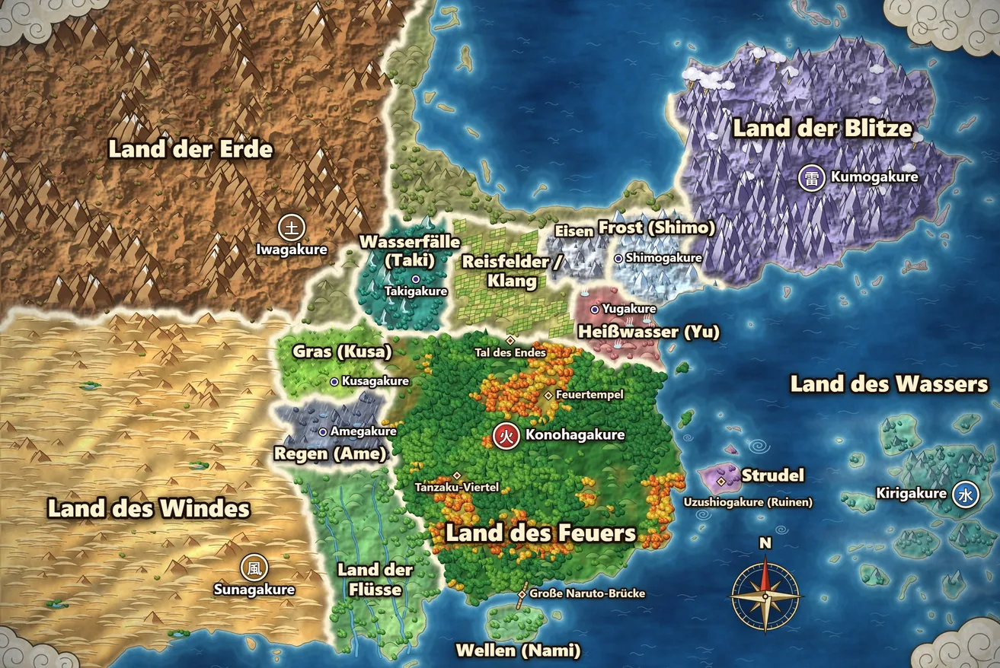
Alle Schauplätze liegen auf dieser Karte. Karte in voller Größe öffnen ↗

Bosse verwandeln sich mitten im Kampf, und du siehst es: Chakramantel, Bijū-Gestalt, neue Helfer, ein anderer Himmel.
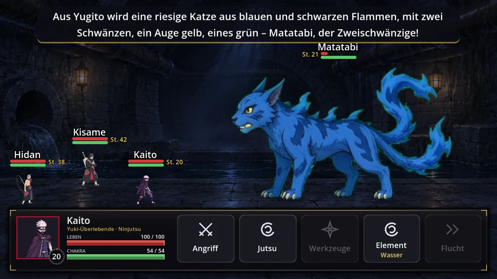
Die Jinchūriki werden zu ihren Bijū, in echter Riesengröße weit über den Menschen.
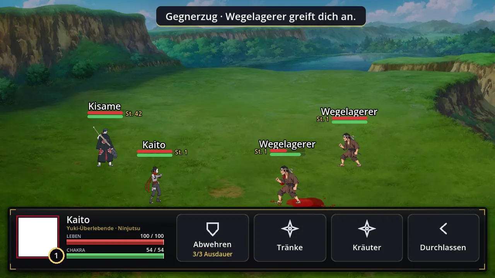
Über 30 Arten von Überfällen, Hinterhalten und Verletzten am Weg. Grund, Zeitpunkt und Ausgang sind jedes Mal anders.
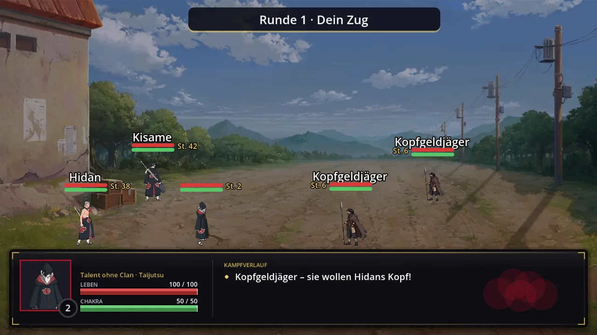
Kisame, Itachi, Hidan, Kakuzu, Deidara und Konan begleiten dich mit eigenem Wesen. Wer stirbt, fehlt für immer.
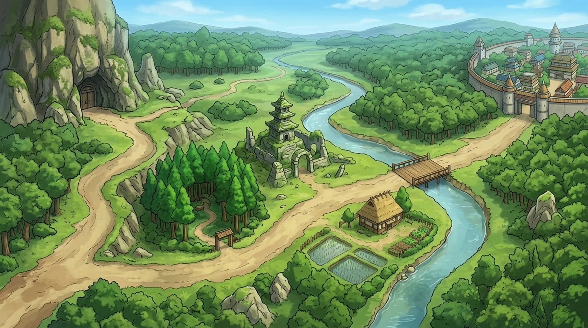
Frei laufen über Wiesen, Ufer und Sand. Höhlen, Ruinen und Haine führen in eigene Orte.
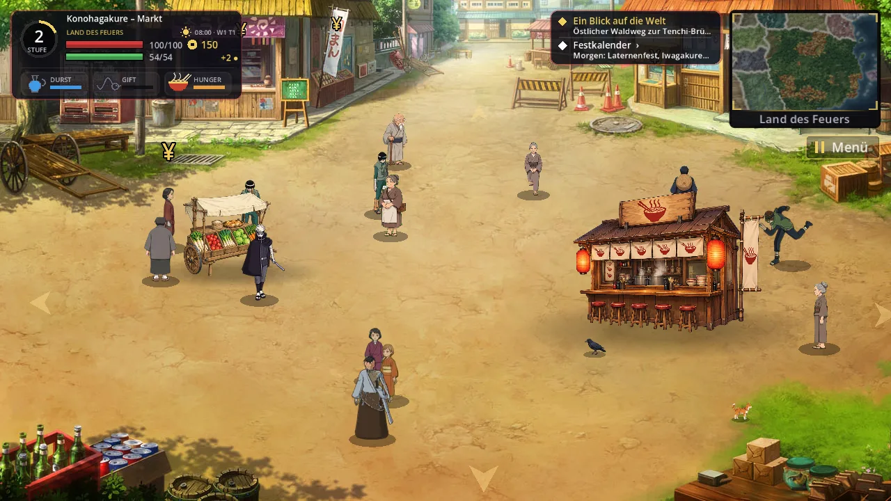
14 Dörfer und Städte. Bewohner mit Tagesablauf, Läden mit Öffnungszeiten und Klatsch, der von Dorf zu Dorf wandert.
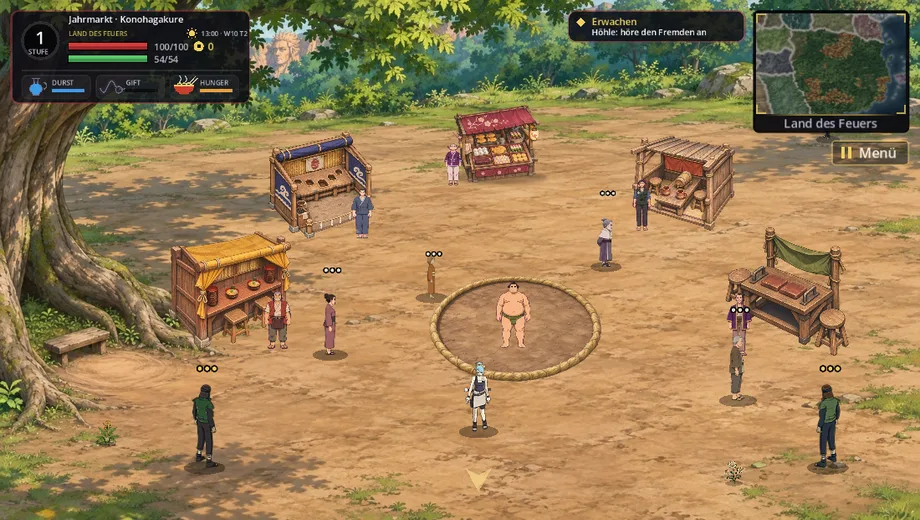
Laternenfeste, Wanderjahrmarkt mit Minispielen, Wettangeln und Turniere im Untergrund nach Kalender.
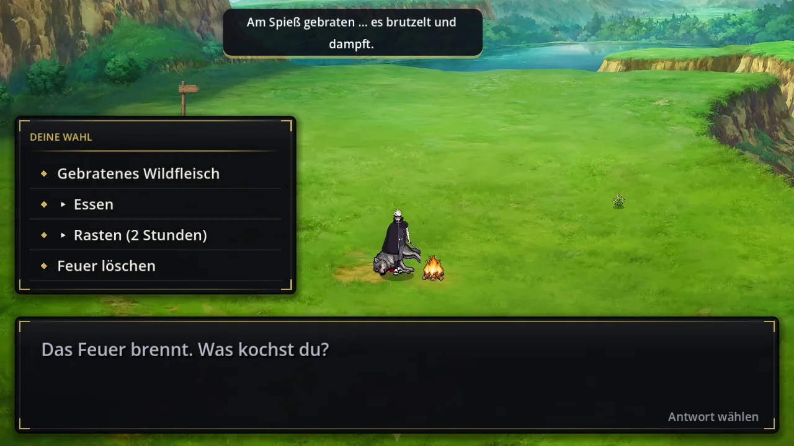
Kräuter, Pilze und Wild, 21 Fischarten, 42 Rezepte. Hunger, Durst und Gift wollen versorgt sein.
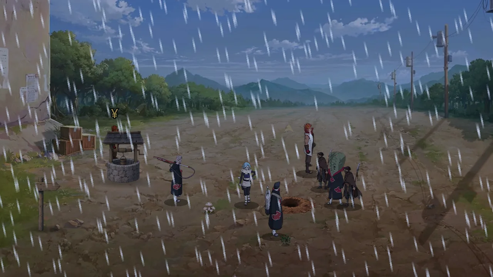
Regen, Nebel, Gewitter, Schnee- und Sandsturm. Das Licht folgt der Spieluhr.
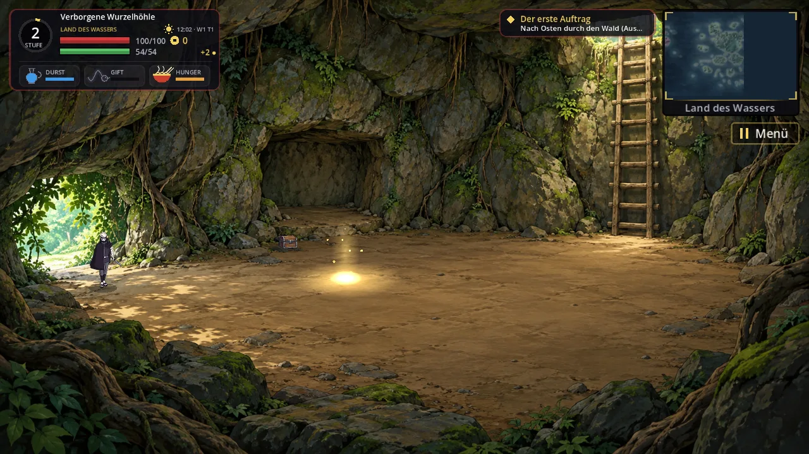
15 Dungeons mit 40 gemalten Räumen, Zwischen- und Endboss. Jeder Durchlauf ist anders.
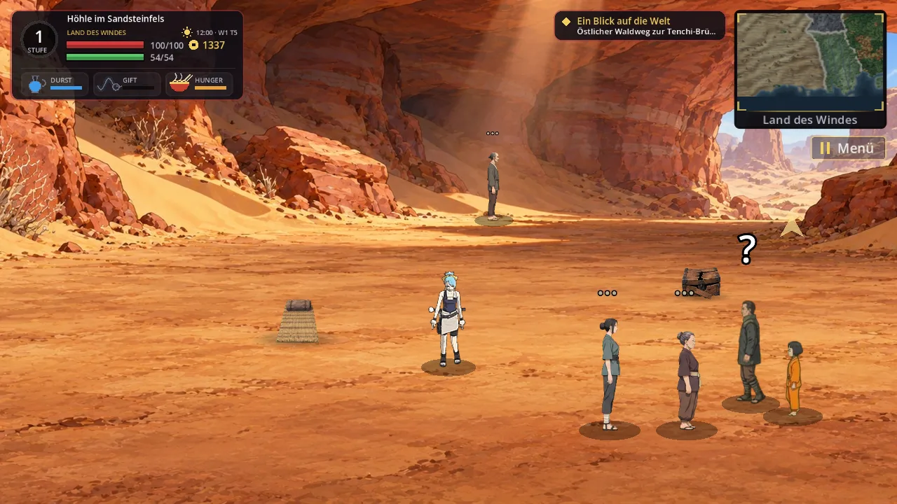
Zu viele Taten? Dann kommst du nur mit Maske ins Dorf, und die ANBU-Hauptleute jagen dich.
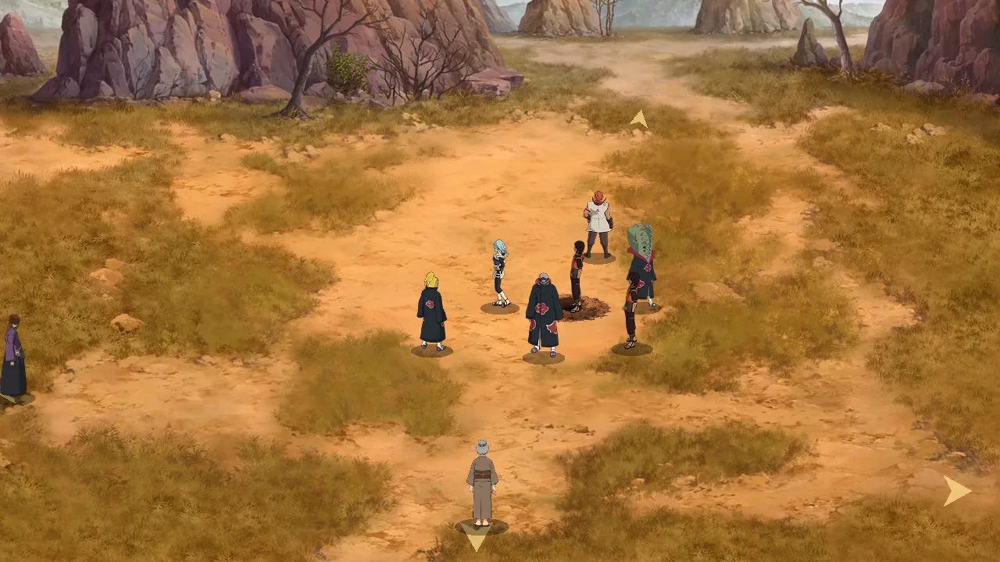
Im Versteck kochst du, übst gegen Mitglieder und holst neue Aufträge. Zu zweit spielt ihr im selben WLAN die Geschichte gemeinsam.
Lade die Basis-APK oben auf dein Android-Gerät. Sie liegt bei Google Drive, weil sie größer als 2 GB ist; meldet Google, dass die Datei zu groß für die Virenprüfung ist, tippe auf „Trotzdem herunterladen“. Öffne sie, bestätige die Installation und starte das Spiel.
Warte im Hauptmenü auf das Update und lade es dort. Schließe die App vollständig und öffne sie erneut. Im Hauptmenü siehst du den aktiven Stand.
Meldet das Spiel, dass eine neue Basis gebraucht wird, oder hat deine alte App noch keinen Updater, lade oben die aktuelle APK. Installiere sie über die vorhandene App und deinstalliere vorher nicht, damit deine Spielstände erhalten bleiben. Spätere Updates lädt das Spiel selbst im Startmenü.
Wo im Spiel ist es passiert? Beschreibe kurz, was du getan hast und was danach zu sehen war.